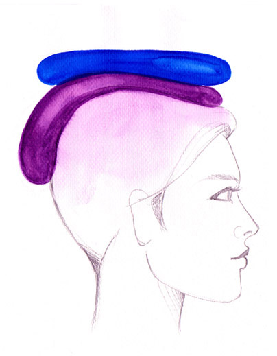

|  |
Τέσσερα χρόνια αργότερα και συγκεκριμένα στις 30 Αυγούστου του 2001, κυριολεκτικά από τη μια στιγμή στην άλλη, είδα το πιο συναρπαστικό πράγμα της μέχρι τότε ζωής μου. Μόλις είχαμε φτάσει σε μία παραλία για διακοπές. Το ίδιο απόγευμα, ενώ καθόμασταν και κουβεντιάζαμε στη βεράντα με τη φίλη, κάποια στιγμή που την κοίταξα, εντελώς ξαφνικά - και ποιος θα το περίμενε άλλωστε - αντίκρισα πάνω απ' το κεφάλι της αυτό ακριβώς που απεικονίζεται στο σκίτσο: δύο σωλήνες φωτός, έναν μωβ κι έναν μπλε-ελεκτρίκ. Το φως μέσα τους παλλόταν διαρκώς και είχε διαφάνεια, διότι έβλεπα δια μέσω τους ό,τι υπήρχε πίσω τους. Ούτε για μία στιγμή δεν αναρωτήθηκα τι ήταν αυτό που έβλεπα. Γνώριζα μέσα μου ότι ήταν η αύρα.
|
Εκείνη τη στιγμή με κατέκλυσε ένα αίσθημα τελειότητας. Έβλεπα ένα συναρπαστικό φως που όμοιό του δεν υπάρχει πάνω στη Γη. Τα χρώματα ήταν ζωντανά, έντονα και το μωβ έμοιαζε να ξεφεύγει από το σωλήνα και να πέφτει πάνω στα μαλλιά της φίλης.
Οι δύο σωλήνες θύμιζαν στήλες ολογράμματος και το μέγεθός τους ήταν όπως εμφανίζεται στο σκίτσο. Όσο συγκεντρωνόμουν πάνω στο έντονο και διαυγές φως που είχαν μέσα τους τόσο πιο έντονο γινόταν.
Προοδευτικά, αυξανόταν η ικανότητά μου να το βλέπω να πάλλεται όλο και πιο ζωντανά, γεγονός που με βεβαίωσε ότι το ΦΩΣ υπάρχει· έκανε μάλιστα ακόμη κι αυτό το πανέμορφο τοπίο, στο οποίο βρισκόμασταν, να φαντάζει τόσο λίγο ... Σκέφτηκα: «τώρα καταλαβαίνω, αυτό πρέπει να είναι ΑΛΗΘΙΝΑ το Απολλώνιο Φως», κι ύστερα: «Ο ΑΟΡΑΤΟΣ ΚΟΣΜΟΣ ΕΙΝΑΙ ΑΠΟΛΥΤΑ ΥΠΑΡΚΤΟΣ, αλλά πώς να το πεις όλο αυτό που βλέπεις;».
Τώρα καταλαβαίνω γιατί οι άνθρωποι που νομίζουν ότι πιστεύουν, ενώ στην πραγματικότητα δεν έχουν ΔΕΙ, μιλάνε σκληρά. Και να γιατί σιωπούν όσοι έχουν δει: τι να πουν, πώς να περιγράψουν τον έρωτα που γεννάει το ΦΩΣ; Ποιος μπορεί να καταλάβει τι είναι ο έρωτας αν δεν έχει ερωτευτεί;
Από εκείνη τη στιγμή ήθελα να κοιτάζω συνεχώς το ΦΩΣ. Τώρα τα κατάλαβα ΟΛΑ: γιατί άλλοι μαραζώνουν κι άλλοι βρίσκονται σε έκσταση, γιατί φοβούνται όσοι δεν έχουν δει και συγχέουν το ΦΩΣ με το σκοτάδι, γιατί, γιατί, γιατί ... Ευτυχώς ήρθε η στιγμή του «διότι».
Τότε από μέσα μου αναδύθηκε μια επιθυμία: να συμβάλλω στην ανακούφιση κι άλλων ψυχών, δείχνοντάς τους το δρόμο προς τη θέαση του Φωτός. |
{kind=link}